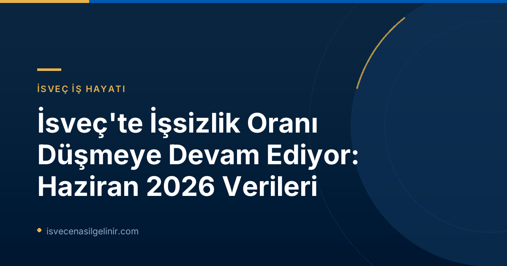

İsveç İş Piyasasında Olumlu Gelişmeler: Haziran 2026
Arbetsförmedlingen’in 16 Temmuz 2026 tarihinde yayınladığı son basın bültenine göre, İsveç iş piyasasında beklenen olumlu gelişmeler yaşanmaya devam ediyor. Haziran 2026 itibarıyla kayıtlı işsiz sayısı belirgin bir düşüşle 344.000 kişiye geriledi. Bu rakam, önceki yılın aynı ayına göre 22.000 kişilik bir azalmayı temsil ediyor.
Haziran 2026 İşsizlik Verilerine Genel Bakış
- Toplam İşsiz Sayısı: 344.000 kişi (Haziran 2025'e göre 22.000 düşüş)
- İşsizlik Oranı: %6.4 (Haziran 2025'te %6.9 idi, 0.5 puanlık düşüş)
- Düşüşün Kapsamı: Hem açık işsizler hem de aktivite desteği programlarındaki kişilerde ülke genelinde düşüş gözlemlendi.
İşgücü piyasasındaki bu düşüş, Arbetsförmedlingen'in önceki tahminleriyle paralel bir seyir izliyor. İşsizlik seviyesi, kayıtlı işgücüne oranla yarım puan azalarak %6.9'dan %6.4'e geriledi. Bu olumlu gelişim; kadınlar, erkekler, İsveç doğumlular ve yurt dışı doğumlular dahil olmak üzere tüm gruplarda ve ülkenin dört bir yanındaki illerde kendini gösterdi.
Bölgesel İşsizlik Oranları
İşsizlik oranları ülke genelinde düşüş gösterse de, illere göre önemli farklılıklar devam etmektedir. Haziran 2026 itibarıyla en yüksek işsizlik oranına sahip iller:
| İl | İşsizlik Oranı (%) |
|---|---|
| Skåne | 8.4 |
| Södermanland | 8.0 |
| Västmanland | 7.8 |
Öte yandan, en düşük işsizlik oranına sahip il %3.4 ile Norrbotten oldu.
Genç İşsizliği ve Uzun Süreli İşsizlikte İyileşmeler
İsveç'te genç işsizliği (18-24 yaş arası) de olumlu yönde ilerliyor. Haziran ayında kayıtlı genç işsiz sayısı 39.000'in biraz üzerindeydi. Bu rakam, geçen yılın aynı ayına göre yaklaşık 3.000 kişilik bir düşüşü ifade ediyor. Genç işsizlik oranı ise %7.8'den %7.3'e geriledi.
Uzun süreli işsizlik de önemli bir düşüş kaydetti. En az bir yıldır işsiz olan kişilerin sayısı 148.000'e düştü (2025 Haziran'da 152.000 idi). Bu gruptaki düşüşün özellikle Avrupa dışı doğumlu bireylerde daha belirgin olduğu görüldü. Geçen yılın aynı ayına göre 6.000 kişilik bir azalışla, Avrupa dışı doğumlu uzun süreli işsiz sayısı 68.000 civarında gerçekleşti. Bu, iş piyasasına entegrasyon çabalarının meyvelerini vermeye başladığını gösteriyor. İsveç'teki göçmenlik ve vatandaşlık süreçleri hakkında daha fazla bilgi için sverigemedborgarskapsprov.com adresini ziyaret edebilirsiniz.
Arbetsförmedlingen Kayıtları ve İstihdam Sonuçları
| Açıklama | Haziran 2026 (kişi) | Haziran 2025 (kişi) | Değişim |
|---|---|---|---|
| Yeni İş Arayan Kayıtları | 43.000 | 44.099 | -1.000 |
| İş Bulan Kişi Sayısı | 36.000 | 32.405 | +3.000 |
Haziran ayında Arbetsförmedlingen'e yeni iş arayan olarak kaydolanların sayısı geçen yıla göre 1.000 kişi azalarak 43.000 civarında gerçekleşti. En sevindirici gelişmelerden biri ise, Arbetsförmedlingen aracılığıyla iş bulan kişi sayısının 3.000 kişi artarak 36.000'e ulaşmasıdır. İşten çıkarılma bildirimleri ise önemli ölçüde azalarak 2.857 kişiye geriledi (Haziran 2025'te 4.606 idi).
İstatistiklerin Metodolojisi Hakkında Bilgilendirme
Arbetsförmedlingen'in aylık basın bültenlerinde sunulan veriler, kurumun kendi kayıtlarına dayanmaktadır ve İsveç'in resmi istatistikleri arasında yer almamaktadır. Resmi işsizlik istatistikleri, İsveç İstatistik Kurumu (Statistiska centralbyrån - SCB) tarafından yürütülen İşgücü Araştırmaları (AKU) ile açıklanmaktadır.
Arbetsförmedlingen istatistiklerinde yer alan "kayıtlı işsizler", açık işsiz (işsiz olan, aktif olarak iş arayan ve hemen işe başlayabilecek durumda olan kişiler) ve aktivite desteği programlarında yer alan kişileri kapsamaktadır. 2024 yılında işgücü büyüklüğünü ve dolayısıyla göreceli işsizlik seviyesini hesaplama metodolojisinde değişiklik yapılmış, 2026 istatistikleri 16-66 yaş aralığını, 2025 istatistikleri ise 16-65 yaş aralığını kapsamaktadır.
Referanslar:
İsveç'te Yaşam ve Fırsatlar
İsveç'te iş hayatı, eğitim, göçmenlik ve vatandaşlık süreçleri hakkında daha fazla bilgi edinmek için kapsamlı rehberlerimize göz atın ve İsveç'e yolculuğunuzda size yardımcı olacak kaynakları keşfedin.